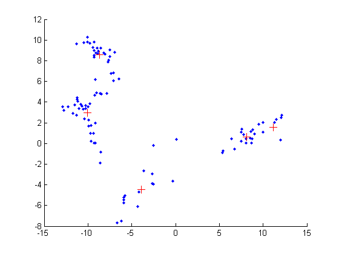

Simple test of mixGaussMissingFitEM
setSeed(1);
nmix = 5;
d = 2;
model.mu = 10*randn(d, nmix);
Sigma = zeros(d, d, nmix);
for c=1:nmix
Sigma(:,:,c) = randpd(d) + 0.1*eye(d);
end
model.Sigma = Sigma;
model.mixweight = normalize(rand(1, nmix) + ones(1, nmix));
nsamples = 100;
X = mixGaussSample(model.mu, model.Sigma, model.mixweight, nsamples);
Xmissing = X;
Xmissing(1:7:end) = NaN;
model = mixGaussMissingFitEm(Xmissing, nmix, 'doMap', true, 'verbose', true);
figure; hold on;
plot(X(:, 1), X(:, 2), '.');
for i=1:nmix
plot(model.cpd.mu(1, i), model.cpd.mu(2, i), '+', 'markersize', 10, 'color', 'r')
end
setSeed(0);
modelMissing = mixGaussMissingFitEm(X, nmix);
modelMissing.cpd.mu
setSeed(0)
modelNotMissing = mixGaussFit(X, nmix);
modelNotMissing.cpd.mu
initializing model for EM
1 loglik: -534.586
2 loglik: -510.547
3 loglik: -506.734
4 loglik: -506.362
5 loglik: -506.31
6 loglik: -506.29
ans =
Columns 1 through 2
-9.589120743776119 -8.641368742062172
1.047661786139787 8.637593261302005
Columns 3 through 4
-10.401504157841799 8.803354416124698
3.840518581423399 0.908673861418563
Column 5
-3.936483072976696
-4.281580166798546
initializing model for EM
1 loglik: -539.999
2 loglik: -525.284
3 loglik: -523.69
4 loglik: -523.174
5 loglik: -523.02
6 loglik: -522.91
7 loglik: -522.816
8 loglik: -522.733
9 loglik: -522.664
10 loglik: -522.605
11 loglik: -522.552
12 loglik: -522.501
ans =
Columns 1 through 2
-9.483499040957479 -8.719110390462687
0.917690270460604 8.798889648248972
Columns 3 through 4
-10.267734005839953 8.799726512969473
4.108384996670424 0.908296480673940
Column 5
-3.933539391341792
-4.278947450912984
